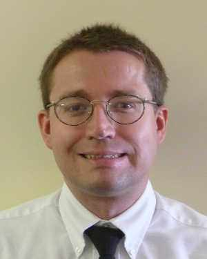

Brigham Bagnes | WDD 130
Hello. My name is Brigham Bagnes, and I live in Holladay City, Utah. I enjoy reading, hiking, and Family History. I am interested in learning programming with the hopes that I can work for FamilySearch and help make their website and its functionality even better. I was born and raised in Utah, and have spent most of my life here. An interesting fact about me is that my full name is Brigham Joseph Bagnes, and I was born on the 24th of July; which is the day the pioneers of The Church of Jesus Christ of Latter-day Saints first entered the Salt Lake valley. I am also the youngest of eight children, but only one of three sons. Some people might think that being part of such a large family and having five older sisters might be daunting, but mine are all quite different from each other, and most of them are easy to get along with. Possilby because I had so many older siblings, my communication skills developed rather early. I was talking in sentences at a year. Though, with so many older siblings to help me, my motor skills developed late.